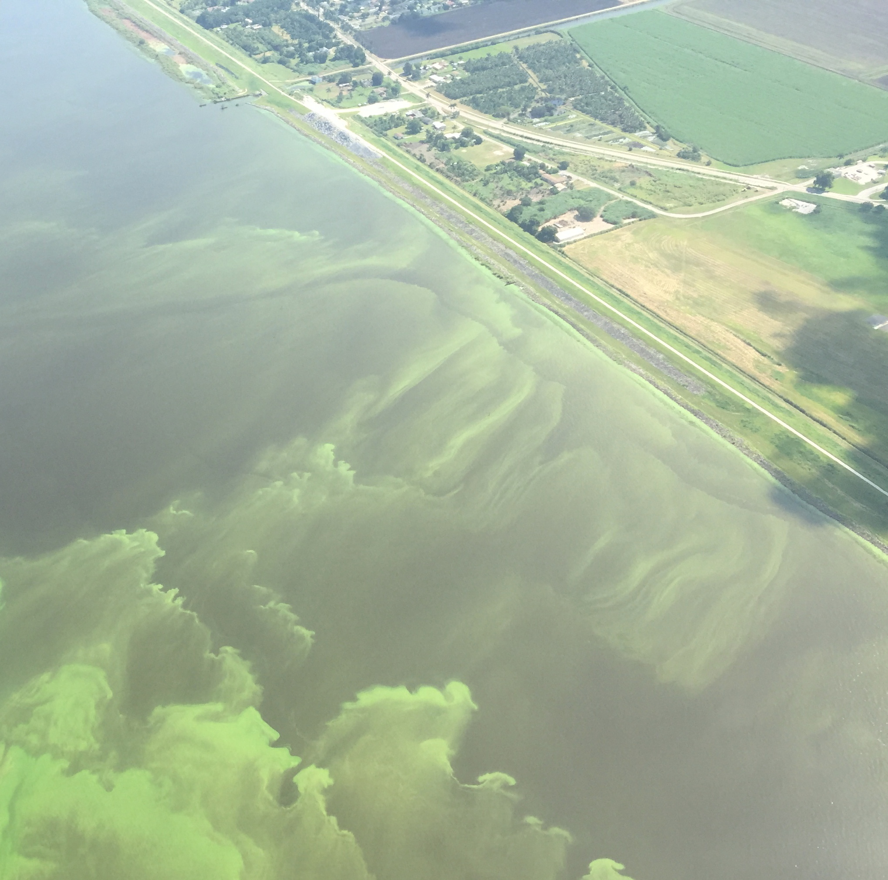

A harmful algal bloom can turn a lake toxic in days. By the time one looks like this, the water is often already unsafe and the window to act has narrowed. This project forecasts where blooms will appear one to four weeks ahead, so a response can be planned before then.

Lake Okeechobee, FL · July 2016 · Photo: N. Aumen / USGS (public domain)A cyanobacteria (blue-green algae) bloom on Lake Okeechobee, Florida — the largest lake in our pilot. The satellite view of this same 2016 event appears later, in the data section. ↓
“Know about HABs” is not a single problem. Each reason a person might care implies a different data set and a different kind of model.
We reviewed 261 public sources to map every operational public HAB tool and what published models actually use — this slide is that landscape (N = 12 tools).
From the same review: which predictors the 14 published freshwater HAB models use (10 report a feature list). Each bar is coloured by the dataset we ingest to cover it — so “temperature and precipitation matter” reads directly as “we bring in ERA5.”
The question, in one sentence (each highlighted word is a deliberate filter):
Forecast the probability of a WHO Alert-Level-1 bloom, one to four weeks ahead, for the 133 satellite-resolvable lakes in Florida, each week, benchmarked against the EPA forecast, using only public data.
Each highlighted word is a unique filter — and a built-in limitation:
This is the raw CyAN cyanobacteria index over central and southern Florida — the same Lake Okeechobee 2016 bloom as the opening photo, from space. Each coloured cell is one 300 m pixel; drag the slider to watch the bloom grow and recede across 2016.
The raw raster mixes lakes, rivers, wet land and shoreline. We keep only pixels inside a resolvable lake polygon (the 133 outlined here), then take the per-lake median index each week — that median is what defines a bloom. Masking is what turns a noisy image into a clean per-lake signal.
data-sources/cyan/METADATA.md; label in models/docs/03-target-definition.md.analysis/cyan_nla_matchup/ (correlational; reproduces the published biomass≠toxin caveat).Before the in-situ sources: many gages and stations aren’t inside a lake. We use HydroBASINS / BasinATLAS level-12 sub-basins (outlined here, one per lake) as the unit to attach point measurements to — a station inside the lake joins directly; otherwise we take the median of stations in the lake’s containing sub-basin. BasinATLAS also supplies static basin traits (land use, climate normals).
The USGS National Water Information System adds discharge, gage height and water temperature — proxies for loading and flushing. Most linked points carry no usable data; the dark points are streamflow (discharge) gages — the robust, continuous ones — usually on a river in the lake’s basin, not the lake itself. Each carries a staleness (how old the reading is).
models/prepare/pull_link_nwis_fl.py).The Water Quality Portal (USGS / EPA / 400+ agencies) adds the chemistry the satellite can’t see: nutrients (phosphorus, nitrogen), chlorophyll-a, temperature, turbidity, DO, pH. Dark burnt-orange dots sample ~monthly-or-better; faded dots are sparser / one-off — so most values are stale at forecast time. Each analyte joins as-of the forecast week with its own staleness.
models/prepare/pull_link_wqp_fl.py).ERA5 gives temperature, precipitation, solar radiation, wind and evaporation everywhere — all 133 lakes, no gaps. It is the densest and most forecast-eligible driver layer. The grid shows its native resolution: a coarse ~0.25° (≈28 km) cell, much larger than most lakes.
Each lake, each week becomes a single row: the CyAN median, weather, chemistry, flow and static basin traits — every time-varying value paired with its staleness. Here is Lake Okeechobee, with its real attributes.
Lakes shaded by how often they cross the WHO Alert-Level-1 threshold, from the real target (2016–2025). Blooms are common in Florida — on the order of a quarter of lake-weeks (26.6% in the held-out 2025 test) — but concentrated: some lakes bloom most weeks, others rarely.
models/data/derived/modeling_table_cyan_fl.parquet (built by the modeling pipeline).We matched CyAN pixels to independent EPA National Lakes Assessment (NLA) lab samples — chlorophyll-a and microcystin — to put numbers on CyAN’s reach and its limits. Two things fall out: a steep coverage funnel, and a biomass-yes / toxin-no gap.
| Attrition funnel (NLA lake-visits) | Lakes | % |
|---|---|---|
| A. Sampled visits with lab chl-a | 1,219 | 100% |
| B. + has a lake polygon | 1,219 | 100% |
| C. + temporally matched to a weekly mosaic | 1,219 | 100% |
| D. + resolvable at 300 m (≥1 in-lake pixel) | 929 | 76% |
| E. + ≥1 cloud-free water pixel (USABLE) | 334 | 27.4% |
analysis/cyan_nla_matchup/outputs/matchup_report.md.analysis/cyan_nla_matchup/ (report + README). A correlational / cross-sectional sizing exercise, not a formal validation.Every model input, by family. Raw = as measured; derived = the lags, trailing windows and anomalies that carry the forecast. Every temporal feature is stored as a (value, staleness) pair, so irregular sampling is handled without interpolation.
Processing: the tree models (HistGBM / XGBoost) take features as-is — they handle missing values (NaN) natively and don’t need scaling. For the linear / logistic models, features are median-imputed and z-scored (mean/SD fit on the training years only, then applied to validation and test).
| Family (dataset) | Raw features | Derived features |
|---|---|---|
| CyAN satellite bloom signal |
Per-lake weekly median / mean / SD of CI_cyano (antecedent, week W−h−1); pixel QA (valid fraction, no-data fraction) | lag-1/2/4 median CI · prior bloom state · recent-bloom fraction (roll-4) · cloud-gap weeks (staleness) · per-lake month climatology (train-only, baseline) |
| Weather — ERA5 all 133 lakes |
Air temperature, precipitation, solar radiation, wind, evaporation (nearest 0.25° cell) | trailing 14/30-day solar · PET (Hargreaves) · growing-degree-days (GDD, 30-day) · trailing 30/90-day precip · SPEI-1 / SPEI-4 (drought) · 14-day mean wind · calm-hours (7-day) |
| Water quality — WQP 123/133 lakes |
Total phosphorus, water temperature, chlorophyll-a, ammonia, orthophosphate (+ TN, turbidity, DO, pH, Secchi) | antecedent lag-1/2/4 · 4/12-week mean/sum · delta-4 · anomaly-vs-recent (anomR) · anomaly-vs-climatology (anomC) · each with staleness |
| Hydrology — NWIS 25/133 gauged |
Discharge, gage height, water temperature (USGS gages) | antecedent lags · gage-height anomalies (inverse) · staleness |
| Static — morphology + BasinATLAS time-invariant |
Lake surface area (NHDPlus) · mean/max depth (pending) · BasinATLAS L12 attributes | inundation % · temperature / PET normals · forest / crop / urban % · human-footprint index (the significant static screens) |
models/docs/02-feature-catalog.md (temporal protocol, availability matrix) and 04-feature-assessment.md (significance screens); assembled by models/prepare/assemble_fusion_table.py and build_cyan_features.py.models/outputs/experiments.md.Five reference predictors on the same 4,527 shared Florida 2025 lake-weeks (132 lakes × 35 weeks; base rate 28.8%; W−2 / h1 — the latency-fair 1-week-ahead scenario): naïve persistence, a CyAN autoregressive ladder, per-lake climatology, and the EPA forecast (both cutoffs). The onset columns are the decision metric — skill on positive flips (currently-clear lakes that bloom next), not the both-direction transition metric that also counts blooms clearing.
models/outputs/headtohead_onset.md (onset metrics + EPA at both cutoffs, all five predictors on the identical shared weeks) and epa_headtohead.md into results.json by build_story_assets.py.models/outputs/experiments.md.models/DESIGN.md §7 (four explainable classifiers: GLM · SVC · XGBoost · GAM). EPA’s own SVC/RF/DNN/LSTM/RNN/GRU comparison (Schaeffer 2024, Table S1) shows no neural-net advantage on this task.All five predictors on the shared FL 2025 EPA weeks, across lead times. Left: overall AUC-ROC. Right: onset-MCC — positive-flip (clear→bloom) skill, the early-warning metric. EPA is a fixed current-week nowcast, so it shows flat across our horizons.
models/outputs/headtohead_onset.md — all five model classes on identical shared weeks; AUC + onset-MCC per horizon, parsed into results.json.exp_perm_importance.md) corroborates.cyan_median + area with no significant held-out AUC loss — massive redundancy (47 feature pairs at |r| > 0.8).clim is a memorization shortcut. The per-lake seasonal base rate is leaned on as hard as all real-time CyAN (Δonset-MCC +0.351) yet removing it costs only 0.068 — kept as a baseline, not a feature; the deployable model is clim-free and generalizable.models/outputs/exp_perm_importance.md; clim decomposition — exp_perm_c1_decomp.md; 2-feature greedy ablation — exp_feature_ablation.md; block view — fusion_eval.md. Synopsis: models/RESULTS-SUMMARY.md.The final, feature-selected model at the EPA-comparable 1-week lead, scored against the same bar from the baselines slide (persistence · CyAN ladder · climatology · EPA @0.10 / @0.50).
The post-ablation model’s skill (and its decay) across every lead time, 0–4 weeks — the horizons that extend EPA’s single 1-week forecast.
models/DESIGN.md §6/§8, models/docs/02-feature-catalog.md (leakage guards, mandatory assembler tests).Switch to the separate live tool: pick a lake and a horizon, see the risk with its uncertainty and its baseline, the top drivers, a suggested action window, and the limits — shown as an honest historical replay, not implied live inference.
The model is a prototype. Turning it into something SePRO runs and trusts is less about more modelling and more about feedback, a chosen direction, affordable production, and honest monitoring.
Assume a weekly AWS cron: ingest + QA/QC all inputs for CONUS, then run inference. Order-of-magnitude back-of-envelope estimates (assumptions stated; the weather-forecast pull dominates ingest time — every run refreshes both ERA5 reanalysis and the ECMWF open forecasts for the 0–4-week horizons):
| Option | Weekly ingest + QA/QC | Rough compute (machine × rate × time) | Rough storage (size × S3 rate) |
|---|---|---|---|
| Full fusion model (CONUS) |
CyAN weekly mosaic (~0.4 GB) + ERA5 CONUS subset + ECMWF open forecasts (0–4 wk) — the slow part; both refresh every run. ~1–3 hr incl. QA. | c6i.4xlarge (16 vCPU/32 GB) @ ~$0.68/hr × ~2.5 hr ≈ $1.70/wk (~$90/yr); inference on ~2k lakes × 5 leads = seconds. | ~5–10 GB/wk raw; 2-yr rolling ≈ 0.5–1 TB × $0.023/GB-mo ≈ $12–24/mo; transfer-in free. |
| Climatology-only | Still ingest CyAN weekly (~0.4 GB) to score the label + monitor drift; no weather / in-situ. | c6i.large (2 vCPU/4 GB) @ ~$0.085/hr × ~0.5 hr ≈ $0.04/wk (~$2/yr). | ~0.4 GB/wk; 2-yr ≈ 40 GB × $0.023 ≈ ~$1/mo. |
| EPA-forecast passthrough |
Scrape the EPA dashboard weekly (MB); optional CyAN for monitoring. | t3.micro @ ~$0.01/hr × minutes ≈ ~$0/wk. | MB/wk ≈ ~$0/mo. |
Stated suggestively, not prescriptively — my honest recommendation:
Research/REFERENCES.md; tool/model links are in the Part 1 dropdowns; result numbers in models/outputs/*.md; the global-product check is in the “go wide” sources.